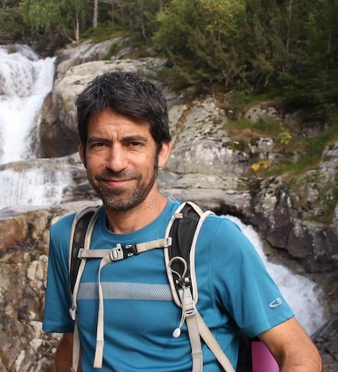
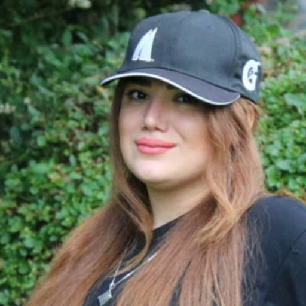
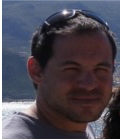
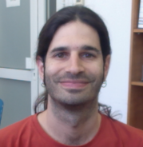
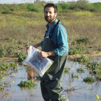
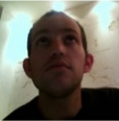

Ran Holtzman
Ran is an Associate Professor (Reader) in Coventry University, leading the Nonequilibrium in Environment and Engineering Systems (NEES) group, within the Fluid and Complex Systems Research Center.
Ran received his PhD from UC Berkeley, working with Tad Patzek on micromechanics of granular materials. He was a postdoctoral associate at MIT with Ruben Juanes, studying multiphase flow in deformable porous media. Prior to joining Coventry, he was a faculty in the Hebrew University of Jerusalem, Israel, and a visiting scholar in the Institute of Environmental Assessment and Water Research (IDAEA-CSIC) in Barcelona, Spain.
Ran is an Associate Professor (Reader) in Coventry University, leading the Nonequilibrium in Environment and Engineering Systems (NEES) group, within the Fluid and Complex Systems Research Center.
Ran received his PhD from UC Berkeley, working with Tad Patzek on micromechanics of granular materials. He was a postdoctoral associate at MIT with Ruben Juanes, studying multiphase flow in deformable porous media. Prior to joining Coventry, he was a faculty in the Hebrew University of Jerusalem, Israel, and a visiting scholar in the Institute of Environmental Assessment and Water Research (IDAEA-CSIC) in Barcelona, Spain.

Students and postdoctoral researchers
Mykyta Chubynsky
EPSRC Research Fellow, Coventry University.
Nonequilibrium flow in disordered media: Memory, hysteresis, and energy dissipation.
Ali Saeibehrouzi
PhD student, Coventry University and University of Warwick (co-tutelle).
Multiphase flow in engineered porous media.

Mahboobeh (Tina) Fallah
PhD student, Coventry University.
Hydrophobicity-induced flooding and soil erosion.
PhD student, Coventry University.
Hydrophobicity-induced flooding and soil erosion.

Callum Samuels
PhD student, Coventry University; with Johnson Matthey inc.
Fluid and heat transport in particulate filters.
PhD student, Coventry University; with Johnson Matthey inc.
Fluid and heat transport in particulate filters.

Qihang Li
A China Scholarship Council (CSC) PhD student
Preferential transport of microplastics in soils.
A China Scholarship Council (CSC) PhD student
Preferential transport of microplastics in soils.
Alumni
Emmanuel Luther
PhD (2023), Coventry University.
Gravity fingering in immiscible fluid-fluid displacement-Implications for carbon geosequestration.
PhD (2023), Coventry University.
Gravity fingering in immiscible fluid-fluid displacement-Implications for carbon geosequestration.
Roi Roded
PhD (2022), Hebrew Univerisity of Jerusalem, Israel.
Dissertation: The multi-physics, multi-scale, nature of reactive transport in porous media.
PhD (2022), Hebrew Univerisity of Jerusalem, Israel.
Dissertation: The multi-physics, multi-scale, nature of reactive transport in porous media.

Oshri Borgman
PhD (2018), Hebrew University of Jerusalem, Israel.
Dissertation: A pore-scale study of the effects of heterogeneity and deformation on fluid displacement in granular media.
PhD (2018), Hebrew University of Jerusalem, Israel.
Dissertation: A pore-scale study of the effects of heterogeneity and deformation on fluid displacement in granular media.

Yonatan Ganot
PhD (2018), Hebrew University of Jerusalem, Israel.
Dissertation: Hydraulic and Geochemical Processes during Managed Aquifer Recharge with Desalinated Seawater.
PhD (2018), Hebrew University of Jerusalem, Israel.
Dissertation: Hydraulic and Geochemical Processes during Managed Aquifer Recharge with Desalinated Seawater.

Inbar Vaknin
MSc (2018), Hebrew University of Jerusalem, Israel.
Thesis: Experimental Study of Pockmark Formation.
MSc (2018), Hebrew University of Jerusalem, Israel.
Thesis: Experimental Study of Pockmark Formation.

Evyatar Cohen
MSc (2017), Hebrew University of Jerusalem, Israel.
Thesis: The effect of heterogeneity and correlation length on CO2 storage in the saline Jurassic aquifer of the Negev.
MSc (2017), Hebrew University of Jerusalem, Israel.
Thesis: The effect of heterogeneity and correlation length on CO2 storage in the saline Jurassic aquifer of the Negev.

Xavier Paredes
Postdoctoral associate (2013-2015), Hebrew University of Jerusalem, Israel.
Project: Dissolution and compaction during reactive transport in carbonates.
Postdoctoral associate (2013-2015), Hebrew University of Jerusalem, Israel.
Project: Dissolution and compaction during reactive transport in carbonates.